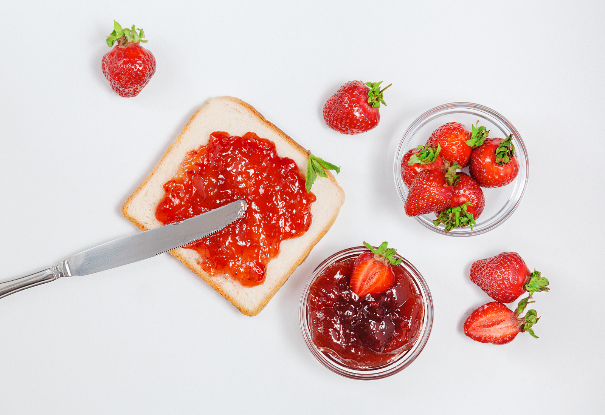

Strawberry Fruit Preserve
OrchardJam Model J320
A smooth strawberry jam made with 60% fruit and packed in a resealable 350 gram glass jar for everyday serving.
- Made with 60% strawberries
- Supplied in a 350 g glass jar
- Resealable lid for refrigerated storage
Strawberry
OrchardJam Strawberry JamModel J320
Made for everyday serving
Strawberry flavour in a practical resealable jar
BerryBrook OrchardJam J320 is a strawberry fruit preserve made with 60% strawberries and packed in a 350 gram glass jar.
The jam combines strawberries, sugar, lemon juice and fruit pectin to create a smooth, spreadable consistency. Each 100 grams contains 250 kilocalories and 52 grams of total sugar.
OrchardJam J320 can be served on bread, toast, pastries, yoghurt or porridge. After opening, the jar should be refrigerated with the lid closed and used within two weeks.
Product highlights
A balanced strawberry preserve for everyday meals
OrchardJam J320 combines a defined fruit content, familiar ingredients and resealable packaging in a convenient 350 gram jar.
60% strawberry content
Strawberries account for 60% of the finished product, providing the jam with its characteristic fruit flavour, colour and texture.
Smooth consistency
Fruit pectin supports a smooth, spreadable texture suitable for bread, toast, pastries and other everyday foods.
Familiar ingredients
OrchardJam J320 is prepared with strawberries, sugar, lemon juice and fruit pectin.
Resealable glass jar
The 350 gram glass container includes a screw-top lid for refrigerated storage after opening.
Multiple serving options
The jam can be served with bread, toast, scones, pastries, yoghurt, porridge or selected desserts.

Designed for everyday meals
Ready to serve directly from the jar
Use a clean, dry spoon or knife to remove the required amount of jam. Spread the jam directly onto bread, toast or pastries, or add a measured spoonful to yoghurt, porridge or desserts.
- No preparation required
OrchardJam J320 is ready to serve immediately after the jar is opened.
- Flexible portion size
Remove only the required amount and return the sealed jar to the refrigerator after serving.
- Straightforward storage
Refrigerate after opening and use the contents within two weeks.
Key product information
Made with 60% fruit
Strawberries make up 60% of the finished OrchardJam J320 product. This percentage refers to the proportion of fruit in the jam, not the percentage of fruit in an individual serving.
Fruit content60%Strawberries
Product details
Product Specifications
Key product and nutritional information for BerryBrook OrchardJam J320 strawberry jam.
| Product name | OrchardJam |
|---|---|
| Model | J320 |
| Product category | Strawberry fruit preserve |
| Fruit content | 60% strawberries |
| Net weight | 350 g |
| Main ingredients | Strawberries, sugar, lemon juice and fruit pectin |
| Energy | 250 kcal per 100 g |
| Total sugar | 52 g per 100 g |
| Packaging | Resealable glass jar with screw-top lid |
| Unopened storage | Store in a cool, dry place away from direct sunlight |
| Storage after opening | Refrigerate and use within 2 weeks |
| Country of manufacture | Ireland |
| Product code | BB-J320-2026 |
Serving guidance
How to serve OrchardJam J320
Follow these steps when opening, serving and storing the product.
- 1
Check the seal
Before opening, check that the jar and lid are undamaged and that the safety seal has not been broken.
- 2
Use a clean utensil
Use a clean, dry spoon or knife to remove the required quantity of jam from the jar.
- 3
Serve as required
Spread directly onto bread, toast or pastries, or add a measured portion to yoghurt, porridge or desserts.
- 4
Refrigerate
Close the lid securely, refrigerate the jar and use the remaining contents within two weeks.
Important information
Food Safety and Storage
Follow these precautions when opening, serving and storing OrchardJam J320.
Check the packaging
- Do not use the product if the glass jar is cracked.
- Do not use the product if the lid is loose or damaged.
- Check the best-before date before serving.
- Store the unopened jar away from heat and direct sunlight.
Keep the product refrigerated
- Close the lid securely after each use.
- Use only clean, dry utensils.
- Keep the opened jar refrigerated.
- Use the contents within two weeks.
Product-specific information
OrchardJam J320 contains naturally occurring fruit seeds and is high in sugar. The product is not suitable for anyone who is allergic or sensitive to any ingredient listed on the label.
Questions and Answers
Frequently Asked Questions
Find answers about OrchardJam J320, including fruit content, ingredients, nutritional values, serving and storage.
Q What percentage of OrchardJam J320 is made from fruit?
A
OrchardJam J320 is made with 60% strawberries.
Q What is the net weight of OrchardJam J320?
A
Each jar contains 350 grams of strawberry jam.
Q What ingredients are used in OrchardJam J320?
A
The main ingredients are strawberries, sugar, lemon juice and fruit pectin.
Q How much energy does OrchardJam J320 provide?
A
OrchardJam J320 provides 250 kilocalories per 100 grams.
Q How much sugar does OrchardJam J320 contain?
A
OrchardJam J320 contains 52 grams of total sugar per 100 grams.
Q How should OrchardJam J320 be stored after opening?
A
Refrigerate the jar after opening, keep the lid securely closed and use the contents within two weeks.
Q Where is OrchardJam J320 manufactured?
A
OrchardJam J320 is manufactured in Ireland.
Q Who manufactures OrchardJam J320?
A
OrchardJam J320 is manufactured and distributed by BerryBrook.